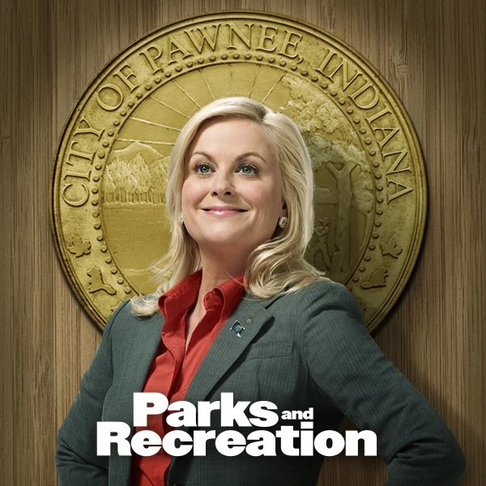
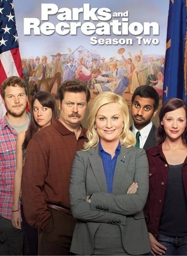
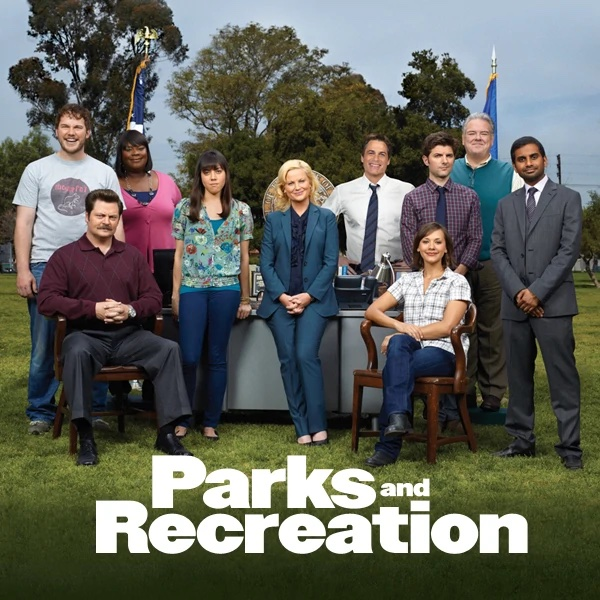
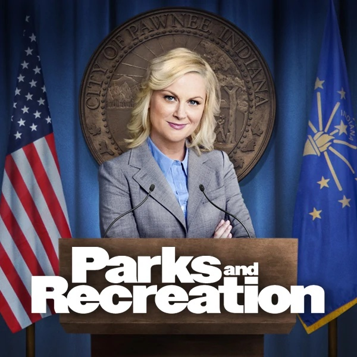
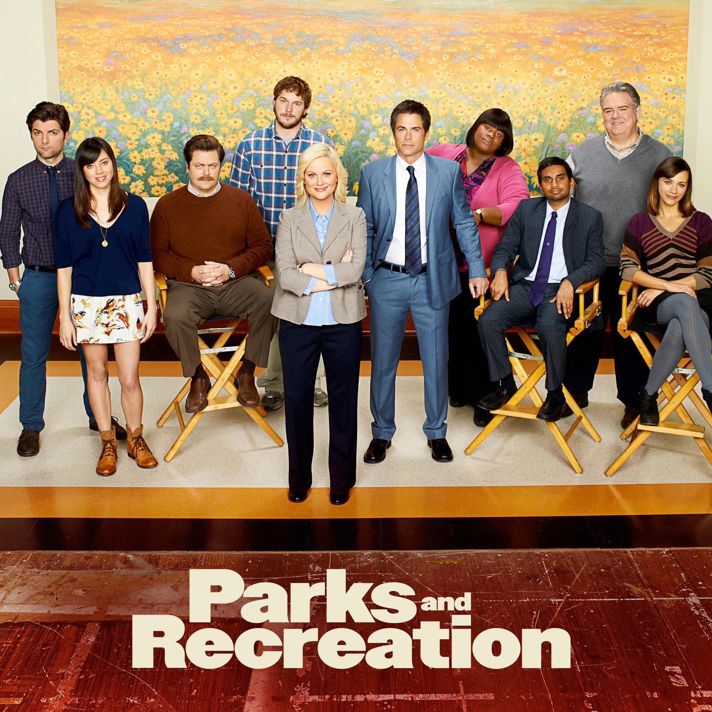
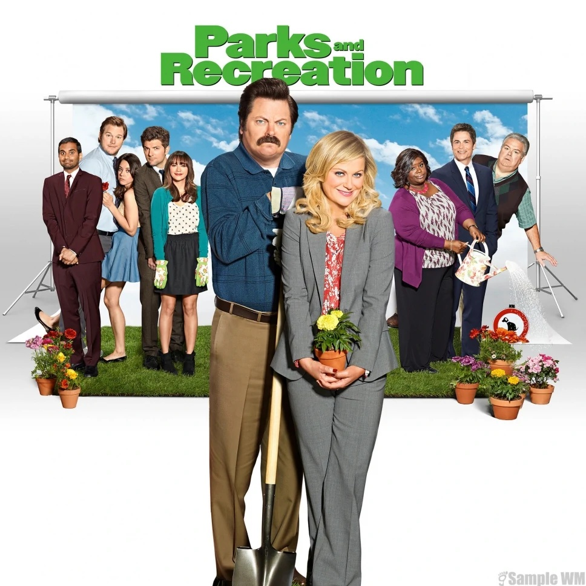
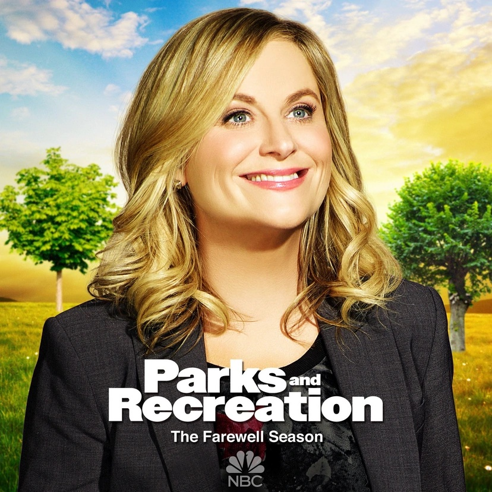

Main Plot
The beloved sitcom Parks & Recreation aired from 2009-2015. The show is a mockumentary that follows the antics of a group of public officials in the small town of Pawnee, Indiana, as they contend with the challenges of making their home a better place in ways both small and big. Leslie Knope (Amy Poehler), her boss Ron Swanson (Nick Offerman), and their staff stole the hearts of viewers everywhere with their quirky charm and doggedly optimistic approach to government, community, and life in general.

Season 1
Parks and Recreation revolves around Leslie Knope, the deputy director of the parks and recreation department in the fictional Indiana town of Pawnee. Local nurse Ann Perkins demands a construction pit next to her house be filled in after her boyfriend, Andy Dwyer, fell in and broke his legs. Leslie vows to turn the pit into a park, despite resistance from the parks director Ron Swanson, an anti-government Libertarian. City planner Mark Brendanawicz – for whom Leslie harbors romantic feelings – pragmatically insists the project is unrealistic due to government red tape, but nevertheless secretly convinces Ron to approve the project. Leslie and her staff, including Tom Haverford and the uninterested summer intern April Ludgate, try encouraging community interest in the pit project, but meet resistance. Later, Ann becomes furious to learn Andy has faked the severity of his injuries so Ann would pamper him. Meanwhile, a drunken and lonely Mark takes Leslie to the pit and kisses her, but she rejects his advances, not wishing to move forward while Mark is drunk. An embarrassed Mark accidentally falls into the pit and injures himself. This results in Ann dumping Andy.

Season 2
Ann breaks up with Andy and begins dating Mark, with Leslie's approval. It is revealed that Tom's marriage to the attractive surgeon Wendy Haverford is actually a green card marriage which, to his disappointment, eventually ends in divorce. Meanwhile, Ron is visited by his horrible ex-wife Tammy 2, a librarian who unsuccessfully tries seducing him into turning the pit into a library branch. The pit is eventually filled in and converted to a multi-purpose lot. April becomes attracted to Andy, but he remains fixated on Ann. Just as Mark plans to propose to Ann, she reveals she no longer has feelings for him. They break up, and Mark leaves his city hall career for a private sector job. Meanwhile, a crippling budget deficit leads state auditors Chris Traeger and Ben Wyatt to temporarily shut down the Pawnee government, much to Leslie's horror and Ron's delight. Meanwhile, Andy develops feelings for April, but she fears he is still hung up on Ann. Ann later kisses Andy due to conflicting emotions from her break-up with Mark, prompting April to angrily reject Andy. The season ends with Tom shockingly discovering that Ron is now dating his ex-wife, Wendy.

Season 3
Leslie Knope decides to bring back the defunct Pawnee Harvest Festival, the success or failure of which will determine the financial future of the department. After weeks of planning, the festival becomes a tremendous success through Leslie's efforts. Ann Perkins and Chris Traeger briefly date, but they break up after he returns to his old job in Indianapolis. Later, however, Chris returns to become Pawnee's acting city manager, and Ben Wyatt also takes a job in Pawnee. Jealous over Ron Swanson dating Wendy Haverford, Tom Haverford briefly dates Tammy 2 to get even, but the two eventually reconcile. Andy Dwyer wins April Ludgate back and they start dating. Only a few weeks later, they marry in a surprise ceremony. Leslie and Ben begin dating, but keep it secret due to Chris's policy against workplace romances. Leslie is approached about possibly running for elected office, a lifelong dream of hers, but when asked about potential scandals in her life she neglects to mention her relationship with Ben. Tom quits his city hall job to form an entertainment company with his friend, Jean-Ralphio Saperstein. The season ends with a horrified Ron learning that his first ex-wife, also named Tammy 1, has come to see him.

Season 4
With Ben Wyatt's encouragement, Leslie Knope decides to run for city council, and the two end their relationship. Leslie hires Andy Dwyer as her assistant. Patricia Clarkson appears as Ron Swanson's first ex-wife, Tammy 1, who uses her power as an IRS employee to audit Ron and temporarily takes complete control over his life. Tom Haverford and Jean-Ralphio Saperstein's company, Entertainment 720, quickly blows through massive amounts of promotional funding while performing little actual work; the company goes out of business and Tom returns to his old job. After struggling to move on both personally and professionally, Ben and Leslie get back together, and Ben sacrifices his job to save Leslie from losing hers. The scandal leads her political advisers to abandon Leslie's campaign, and the parks department volunteers to become her new campaign staff. Ben agrees to be Leslie's campaign manager. Leslie's ex-boyfriend Dave Sanderson reappears and unsuccessfully attempts to win Leslie back. Leslie's campaign faces myriad setbacks against her main opponent, Bobby Newport, and his famous campaign manager Jennifer Barkley. Ann Perkins and Tom begin an extremely rocky romantic relationship. April Ludgate takes on more responsibility and is eventually given Leslie's old job. In the season finale, Jennifer offers Ben a job in Washington, which he reluctantly accepts, and after the race is initially called for Newport, Leslie wins the position in a recount.

Season 5
Season 5 focuses on Leslie Knope (Amy Poehler) and her staff at the parks and recreation department of the fictional Indiana town of Pawnee. Although not having an overarching storyline like Season 4, this season details the aftermath of Leslie's role as a Councilwoman in Pawnee, and her rivalry with councilman Jeremy Jamm (Jon Glaser). Other storylines include Ben Wyatt (Adam Scott) and April Ludgate (Aubrey Plaza)'s career move to Washington D.C., Ann Perkins (Rashida Jones)'s attempts to get pregnant, the progress in Ben and Leslie's relationship, Andy's attempts at becoming a police officer, and Ron Swanson (Nick Offerman) meeting single mother Diane (Lucy Lawless).

Season 6
The season chronicles Leslie facing the recall vote from City Council, Ann Perkins's (Rashida Jones) and Chris Traeger's (Rob Lowe) move to Michigan to start their family, Andy Dwyer's (Chris Pratt) career in London, and the city merger of Eagleton and Pawnee, resulting in the Unity Concert organized by Leslie.Rob Lowe's Chris Traeger and Rashida Jones' Ann Perkins left the show in the season's 13th episode. Tatiana Maslany guest starred in two episodes as a love interest for Aziz Ansari's wannabe playboy Tom, and Heidi Klum guest starred as a European mayor being honored at the same "Women In Government" event as Leslie.

Season 7
In 2017, Leslie is successfully running the midwest division of the National Parks Service, with April and Terry. Tom Haverford is a successful restaurant mogul in Pawnee and Donna is running her real estate venture. Andy is a kids-show host on Pawnee television. Ron Swanson has left the Parks department to start Very Good Building Company. Leslie and Ron have become enemies following an incident referred to as "Morningstar", an apartment building Ron's company builds on the site of Ann's old house. Around this time a series of miscommunications between Leslie and Ron (and their own individual stubbornness) means they do not speak for several years. They meet again when they become competing bidders for a large parcel of land the Newport family wants to sell — Leslie desires to create a new National Park and Ron, working on behalf of tech company Gryzzl, wants to build a tech campus on the land.